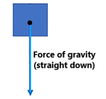
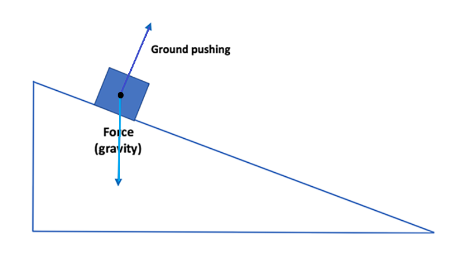

Acceleration from one force. An object will speed up (or "accelerate") in the direction of the Net Force acting on the object. (This idea is one part of Newton's Second Law.)
Example 1. For example, say there is only one force (gravity) acting on an object. This force acts vertically downward on the object (toward the center of the Earth). The object will accelerate in the downward direction.
Because gravity pulls downward, no part of the force of gravity pulls in the horizontal direction (which is perpendicular, or at a right angle, to the vertical direction). Because there is no force of gravity (or any other forces) in the horizontal direction, the object does not accelerate in the horizontal direction. It falls straight down.
Acceleration from more than one force. Now, let's say an object is sitting on flat ground (rather than freely falling). There are two forces acting on the object. Gravity still pulls down on the object. However, the ground will push up on the object with the same force. (When any two objects are in contact, they push on each other with the same amount of force, but in opposite directions: See Newton's Third Law Unit.) Because the vertical forces are "balanced", the net force on the object in the up/down direction is zero and the object will not move in this direction.

But what happens in the horizontal direction? As we already said, the force of gravity is downward only. The ground pushes straight up on the object. So, neither force pushes the object in the horizontal direction. Because there are no forces in the horizontal direction, the object does not accelerate—or change its motion—in the horizontal direction either.
Acceleration of an object on a ramp. Now, let's say that the object was on a hill instead of on flat ground (as shown below). Gravity still pulls straight downward on the object, like it always does! The ground still pushes upward (perpendicular to the surface) on the object. Let's assume there is no friction between the object and surface of the hill to make things simpler!
We want to see how "much" of each force is in the direction of the hill. This will determine the acceleration of the object down the hill.
The force of the ground pushing up on the object is perpendicular to the hill. Because of this, it does not affect the acceleration of the object down the hill.
However, the force of gravity is no longer perpendicular to the hill surface. The downward force of gravity can be separated into two parts:
In other words, some of the force of gravity is in the direction of down the hill (the green arrow in the figure below). Another part of the force of gravity acts perpendicular to the surface, downward (the orange arrow). This "component" of the force of gravity does not affect the acceleration of the object.
So, only the part of the force that is parallel to the surface of the hill affects the motion of the object down the hill.
Acceleration on steeper ramp. Let's make the hill even steeper! Now, the part of the force of gravity that is parallel to the hill (in the direction of the object's motion) is larger than when the hill was less steep (in the last example).
In the extreme, the hill is a cliff, and the object falls straight down. In this case, gravity acts entirely in the direction of the motion of the object.
Summary. The bigger the force that is acting on an object in the direction of its motion, the more the object will speed up in the direction of the force while that force is acting on the object. As the hill gets steeper, the part of the force of gravity that acts down the hill increases. So, the object's speed increases more quickly (or the acceleration increases) as the hill gets steeper.


***Note for Teachers: You can access more information about this website and find other resources for science inquiry on the ISP Tutor website.
©2021 Klahr Lab, Carnegie Mellon University. All Rights Reserved
Carnegie Mellon University | Dept. of Psychology | 5000 Forbes Ave. | Pittsburgh, PA 15213 The TED project was funded in part by the Institute of Education Science (IES), Grant R305H060034, and in part by the National Science Foundation, Grant SBE035442. The ISP Tutor project is funded by IES, Grant R305A170176.
The research reported here was supported by the Institute of Education Sciences, U.S. Department of Education, through Grant R305A170176 to Carnegie Mellon University. The opinions expressed are those of the authors and do not represent views of the Institute or the U.S. Department of Education.